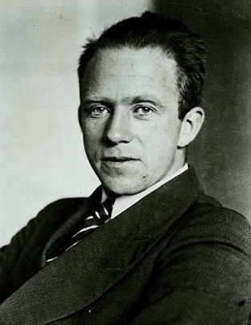
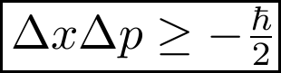
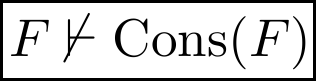

The World is Full of Beauty
Humanity is Inherently Limited
|  | ||
|  |  |
"I do not understand what I do. For what I want to do I do not do, but what I hate I do... I have the desire to do what is good, but I cannot carry it out. For I do not do the good I want to do, but the evil I do not want to do�this I keep on doing."
- the Apostle Paul
Knowledge is Relational
�With this word [truth] one person enters a covenant with another, a pledge to engage in mutually accountable and transforming relationship...to know in truth is to become betrothed, to engage the known with one's whole self.�
- Parker J. Palmer